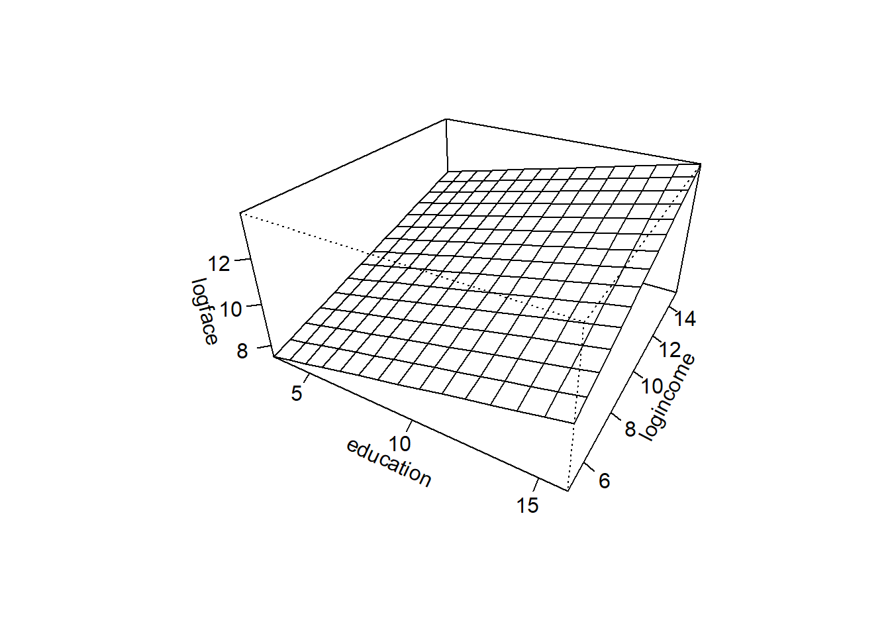
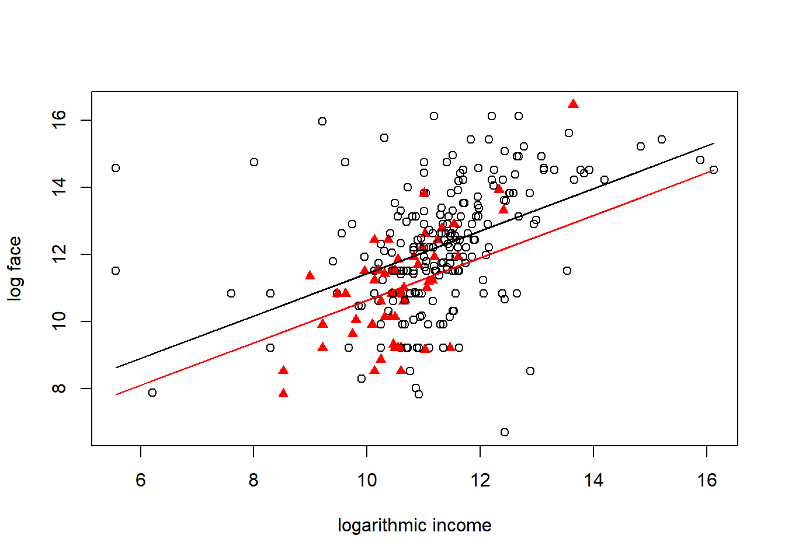
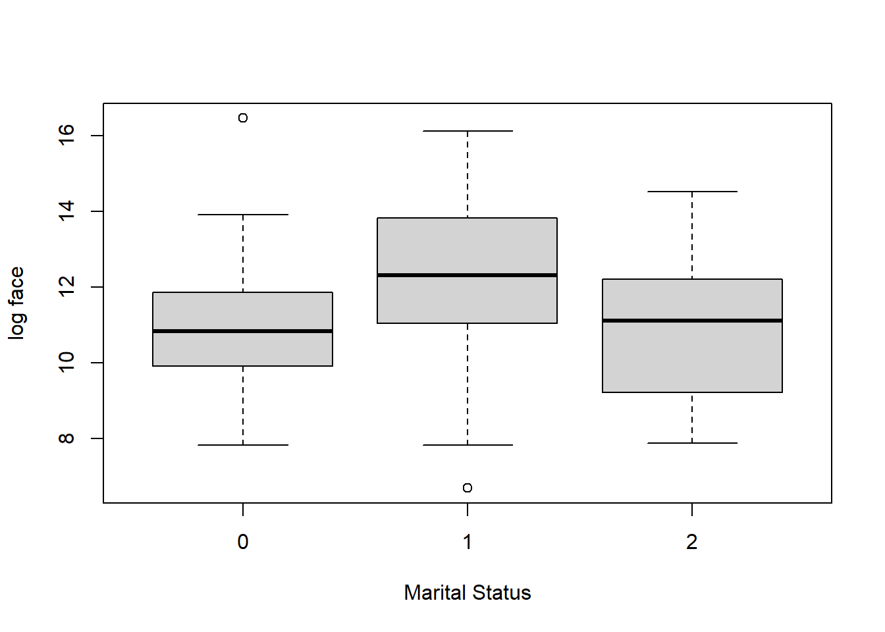

Chapter 3 Multiple Linear Regression
Chapter description
This chapter introduces linear regression in the case of several explanatory variables, known as multiple linear regression (MLR). Many basic linear regression concepts extend directly, including goodness of fit measures such as the coefficient of determination and inference using t-statistics. Multiple linear regression models provide a framework for summarizing highly complex, multivariate data. Because this framework requires only linearity in the parameters, we are able to fit models that are nonlinear functions of the explanatory variables, thus providing a wide scope of potential applications.
Term Life Data
Video Overhead Details
A Details. Demand for term life insurance
“Who buys insurance and how much do they buy?”
- Companies have data on current customers
- How do get info on potential (new) customers?
To understand demand, consider the Survey of Consumer Finances (SCF)
- This is a nationally representative sample that contains extensive information on potential U.S. customers.
- We study a random sample of 500 of the 4,519 households with positive income that were interviewed in the 2004 survey.
- We now focus on n = 275 households that purchased term life insurance
B Details. Term life insurance summary statistics
We study y = face, the amount that the company will pay in the event of the death of the named insured.
We focus on k = 3 explanatory variables - annual income, - the number of years of education of the survey respondent and - the number of household members, numhh.
The data suggest that income and face are skewed so we also introduce logarithmic versions.
C Details. Summary statistics
#Term <- read.csv("CSVData\\term_life.csv", header = TRUE)
Term <- read.csv("https://assets.datacamp.com/production/repositories/2610/datasets/efc64bc2d78cf6b48ad2c3f5e31800cb773de261/term_life.csv", header = TRUE)
# PICK THE SUBSET OF THE DATA CORRESPONDING TO TERM PURCHASE
Term1 <- subset(Term, subset = face > 0)
str(Term1)
head(Term1)
library(psych)
Term2 <- Term1[, c("education", "face", "income", "logface", "logincome", "numhh")]
#options(scipen = 100, digits = 4)
head(Term2)
describe(Term2)[,c(3,4,8,5,9,2)]'data.frame': 275 obs. of 7 variables:
$ education: int 16 9 16 17 11 16 17 16 14 12 ...
$ face : int 20000 130000 1500000 50000 220000 600000 100000 2500000 250000 50000 ...
$ income : int 43000 12000 120000 40000 28000 100000 112000 15000 32000 25000 ...
$ logface : num 9.9 11.8 14.2 10.8 12.3 ...
$ logincome: num 10.67 9.39 11.7 10.6 10.24 ...
$ numhh : int 3 3 5 4 4 3 2 4 1 2 ...
$ marstat : int 1 1 1 1 2 1 1 1 0 1 ...
education face income logface logincome numhh marstat
1 16 20000 43000 9.903488 10.668955 3 1
2 9 130000 12000 11.775290 9.392662 3 1
3 16 1500000 120000 14.220976 11.695247 5 1
4 17 50000 40000 10.819778 10.596635 4 1
6 11 220000 28000 12.301383 10.239960 4 2
8 16 600000 100000 13.304685 11.512925 3 1
education face income logface logincome numhh
1 16 20000 43000 9.903488 10.668955 3
2 9 130000 12000 11.775290 9.392662 3
3 16 1500000 120000 14.220976 11.695247 5
4 17 50000 40000 10.819778 10.596635 4
6 11 220000 28000 12.301383 10.239960 4
8 16 600000 100000 13.304685 11.512925 3
mean sd min median max n
education 14.52 2.55 2.00 16.00 1.700e+01 275
face 747581.45 1674362.43 800.00 150000.00 1.400e+07 275
income 208974.62 824009.77 260.00 65000.00 1.000e+07 275
logface 11.99 1.87 6.68 11.92 1.645e+01 275
logincome 11.15 1.30 5.56 11.08 1.612e+01 275
numhh 2.96 1.49 1.00 3.00 9.000e+00 2753.1 Method of least squares
In this section, you learn how to:
- Interpret correlation coefficients by visualizing a scatterplot matrix
- Fit a plane to data using the method of least squares
- Predict an observation using a least squares fitted plane
3.1.1 Video
Video Overhead Details
A Details. Correlation table
education face income logface logincome numhh
education 1.000 0.244 0.163 0.383 0.343 -0.064
face 0.244 1.000 0.217 0.656 0.323 0.107
income 0.163 0.217 1.000 0.251 0.518 0.142
logface 0.383 0.656 0.251 1.000 0.482 0.288
logincome 0.343 0.323 0.518 0.482 1.000 0.179
numhh -0.064 0.107 0.142 0.288 0.179 1.000B Details. Scatterplot matrix
C Details. Visualizing a regression plane
education <- seq(3, 16, length = 15)
logincome <- seq(5, 15, length = 15)
f <- function(education,logincome){
r <- 5 + 0.221*education + 0.354*logincome
}
logface <- outer(education, logincome, f)
persp(education, logincome, logface, theta = 30,
phi = 30, expand = 0.5, ticktype = "detailed")
education <- seq(3, 16, length = 15)
logincome <- seq(5, 15, length = 15)
f <- function(education,logincome){
r <- 5 + 0.221*education + 0.354*logincome
}
logface <- outer(education, logincome, f)
persp(education, logincome, logface, theta = 30,
phi = 30, expand = 0.5, ticktype = "simple", #ticktype = "detailed", #
xlab = "x1", ylab="x2",zlab="y", nticks = 1)D Details. Method of least squares
- For observation \(\{(y, x_1, \ldots, x_k)\}\), the height of the regression plane is \[b_0 + b_1 x_1 + \cdots + b_k x_k .\]
- Thus, \(y - (b_0 + b_1 x_1 + \cdots + b_k x_k)\) represents the deviation.
- The sum of squared deviations is \[SS(b_0, \ldots, b_k) = \sum (y - (b_0 + b_1 x_1 + \cdots + b_k x_k))^2 .\]
- The method of least squares – determine values of \(b_0, \ldots, b_k\) that minimize \(SS\).
E Details. Fit a multiple linear regression model
Term_mlr <- lm(logface ~ education + numhh + logincome, data = Term2)
round(coefficients(Term_mlr), digits=4)
newdata <- data.frame(logincome = log(60000), education = 12, numhh = 3)
exp(predict(Term_mlr, newdata))(Intercept) education numhh logincome
2.5841 0.2064 0.3060 0.4935
1
90135.86 3.1.2 Exercise. Least squares and term life data
Assignment Text
The prior video introduced the Survey of Consumer Finances (SCF) term life data. A subset consisting of only those who purchased term life insurance, has already been read into a dataframe Term2.
Suppose that you wish to predict the amount of term life insurance that someone will purchase but are uneasy about the education variable. The SCF education variable is the number of completed years of schooling and so 12 corresponds to completing high school in the US. Your sense is that, for purposes of purchasing life insurance, high school graduates and those that attend college should be treated the same. So, in this exercise, your will create a new variable, education1, that is equal to years of education for those with education less than or equal to 12 and is equal to 12 otherwise.
Instructions
- Use the pmin() function to create the
education1variable as part of theTerm2dataframe. - Check your work by examining summary statistics for the revised
Term2dataframe. - Examine correlations for the revised dataframe.
- Using the method of least squares and the function lm(), fit a MLR model using
logfaceas the dependent variables and usingeducation,numhh, andlogincomeas explanatory variables. - With this fitted model and the function predict(), predict the face amount of insurance that someone with income of 40,000, 11 years of education, and 4 people in the household would purchase.
3.1.3 Exercise. Interpreting coefficients as proportional changes
Assignment Text
In a previous exercise, you fit a MLR model using logface as the outcome variable and using education, numhh, and logincome as explanatory variables; the resulting fit is in the object Term_mlr. For this fit, the coefficient associated with education is 0.2064. We now wish to interpret this regression coefficient.
The typical interpretation of coefficients in a regression model is as a partial slope. That is, for the coefficient \(b_1\) associated with \(x_1\), we interpret \(b_1\) to be amount that the expected outcome changes per unit change in \(x_1\), holding the other explanatory variables fixed.
For the term life example, the units of the outcome are in logarithmic dollars. So, for small values of \(b_1\), we can interpret this to be a proportional change in dollars.
Instructions
- Determine least square fitted values for several selected values of
education, holding other explantory variables fixed. For this part of the demonstration, we used their mean values. - Determine the proportional changes. Note the relation between these values from a discrete change approximation to the regression coefficient for
educationequal to 0.2064.
3.1.4 Exercise. Interpreting coefficients as elasticities
Assignment Text
In a previous exercise, you fit a MLR model using logface as the outcome variable and using education, numhh, and logincome as explanatory variables; the resulting fit is in the object Term_mlr. From this fit, the coefficient associated with logincome is 0.4935. We now wish to interpret this regression coefficient.
The typical interpretation of coefficients in a regression model is as a partial slope. When both \(x_1\) and \(y\) are in logarithmic units, then we can interpret \(b_1\) to be ratio of two percentage changes, known as an elasticity in economics. Mathematically, we summarize this as \[ \frac{\partial \ln y}{\partial \ln x} = \left(\frac{\partial y}{y}\right) ~/ ~\left(\frac{\partial x}{x}\right) . \]
Instructions
- For several selected values of
logincome, determine the corresponding proportional changes. - Determine least square fitted values for several selected values of
logincome, holding other explantory variables fixed. - Determine the corresponding proportional changes for the fitted values.
- Calculate the ratio of proportional changes of fitted values to those for income. Note the relation between these values (from a discrete change approximation) to the regression coefficient for
logincomeequal to 0.4935.
Hint. When you calculate the ratio of proportional changes of fitted values to those for income, note the relation between these values (from a discrete change approximation) to the regression coefficient for logincome equal to 0.4935.
3.2 Statistical inference and multiple linear regresson
In this section, you learn how to:
- Explain mean square error and residual standard error in terms of degrees of freedom
- Develop an ANOVA table and use it to derive the coefficient of determination
- Calculate and interpret the coefficient of determination adjusted for degrees of freedom
- Conduct a test of a regression coefficient
- Summarize regression coefficients using point and interval estimators
3.2.1 Video
Video Overhead Details
A Details. Goodness of fit
Summarize
- deviations
- \(s^2\)
- \(R^2\)
- \(R_a^2\)
- ANOVA table
B Details. Goodness of fit and term life
Term_mlr <- lm(logface ~ education + numhh + logincome, data = Term2)
summary(Term_mlr)
anova(Term_mlr)
Call:
lm(formula = logface ~ education + numhh + logincome, data = Term2)
Residuals:
Min 1Q Median 3Q Max
-5.7420 -0.8681 0.0549 0.9093 4.7187
Coefficients:
Estimate Std. Error t value Pr(>|t|)
(Intercept) 2.58408 0.84643 3.053 0.00249 **
education 0.20641 0.03883 5.316 2.22e-07 ***
numhh 0.30605 0.06333 4.833 2.26e-06 ***
logincome 0.49353 0.07754 6.365 8.32e-10 ***
---
Signif. codes: 0 '***' 0.001 '**' 0.01 '*' 0.05 '.' 0.1 ' ' 1
Residual standard error: 1.525 on 271 degrees of freedom
Multiple R-squared: 0.3425, Adjusted R-squared: 0.3353
F-statistic: 47.07 on 3 and 271 DF, p-value: < 2.2e-16
Analysis of Variance Table
Response: logface
Df Sum Sq Mean Sq F value Pr(>F)
education 1 140.55 140.549 60.417 1.601e-13 ***
numhh 1 93.68 93.681 40.270 9.251e-10 ***
logincome 1 94.24 94.238 40.510 8.316e-10 ***
Residuals 271 630.43 2.326
---
Signif. codes: 0 '***' 0.001 '**' 0.01 '*' 0.05 '.' 0.1 ' ' 1C Details. Statistical inference
- hypothesis testing of a regression coefficient
- confidence intervals
D Details. Statistical inference and term life
Term_mlr <- lm(logface ~ education + numhh + logincome, data = Term2)
model_sum <- summary(Term_mlr)
model_sum$coefficients
round(confint(Term_mlr, level = .95), digits = 3)
round(confint(Term_mlr, level = .95), digits = 3) Estimate Std. Error t value Pr(>|t|)
(Intercept) 2.5840786 0.84642972 3.052916 2.491588e-03
education 0.2064139 0.03883186 5.315581 2.223619e-07
numhh 0.3060455 0.06332511 4.832926 2.255708e-06
logincome 0.4935323 0.07754198 6.364711 8.316097e-10
2.5 % 97.5 %
(Intercept) 0.918 4.250
education 0.130 0.283
numhh 0.181 0.431
logincome 0.341 0.646
2.5 % 97.5 %
(Intercept) 0.918 4.250
education 0.130 0.283
numhh 0.181 0.431
logincome 0.341 0.6463.2.2 Exercise. Statistical inference and term life
Assignment Text
In later chapters, we will learn how to specify a model using diagnostics techniques; these techniques were used to specify face in log dollars for the outcome and similarly income in log dollars as an explanatory variable. Just to see how things work, in this exercise we will create new variables face and income that are in the original units and run a regression with these. We have already seen that rescaling by constants do not affect relationships but can be helpful with interpretations, so we define both face and income to be in thousands of dollars. A prior video introduced the term life dataframe Term2.
Instructions
- Create
Term2$faceby exponentiatinglogfaceand dividing by 1000. For convenience, we are storing this variable in the data setTerm2. Use the same process to createTerm2$income. - Run a regression using
faceas the outcome variable andeducation,numhh, andincomeas explanatory variables. - Summarize this model and identify the residual standard error (\(s\)) as well as the coefficient of determination (\(R^2\)) and the version adjusted for degrees of freedom (\(R_a^2\)).
3.3 Binary variables
In this section, you learn how to:
- Interpret regression coefficients associated with binary variables
- Use binary variables and interaction terms to create regression models that are nonlinear in the covariates
3.3.1 Video
Video Overhead Details
A Details. Binary variables
We can define a new variable \[ single= \left\{ \begin{array}{ll} 0 & \text{for other respondents} \\ 1 & \text{for single respondents} \end{array} \right. \]
The variable single is said to be an indicator, or dummy, variable.
To interpret coefficients, we now consider the regression function
\[ \text{E }logface = \beta_0 + \beta_1 logincome + \beta_2 single \] - This can be expressed as two lines \[ \text{E }logface = \left\{ \begin{array}{ll} \beta_0 + \beta_1 logincome & \textrm{for other respondents} \\ \beta_0 + \beta_2 + \beta_1 logincome & \textrm{for single respondents} \end{array} \right. . \] - The least squares method of calculating the estimators, and the resulting theoretical properties, are the still valid when using binary variables.
B Details. Visualize effect of binary variables
C Details. R script for visualization
Term4 <- Term1[,c("numhh", "education", "logincome", "logface", "marstat")]
Term4$marstat <- as.factor(Term4$marstat)
table(Term4$marstat)
Term4$single <- 1*(Term4$marstat == 0)
model_single <- lm(logface ~ logincome + single, data = Term4)
summary(model_single)
plot(Term4$logincome,Term4$logface,xlab="logarithmic income", ylab="log face",
pch= 1+16*Term4$single, col = c("red", "black", "black")[Term4$marstat])
Ey1 <- model_single$coefficients[1]+model_single$coefficients[2]*Term4$logincome
Ey2 <- Ey1 + model_single$coefficients[3]
lines(Term4$logincome, Ey1)
lines(Term4$logincome, Ey2, col="red")
0 1 2
57 208 10
Call:
lm(formula = logface ~ logincome + single, data = Term4)
Residuals:
Min 1Q Median 3Q Max
-6.2828 -0.8785 0.0364 0.9227 5.9573
Coefficients:
Estimate Std. Error t value Pr(>|t|)
(Intercept) 5.09007 0.88643 5.742 2.49e-08 ***
logincome 0.63378 0.07776 8.151 1.33e-14 ***
single -0.80006 0.24796 -3.227 0.00141 **
---
Signif. codes: 0 '***' 0.001 '**' 0.01 '*' 0.05 '.' 0.1 ' ' 1
Residual standard error: 1.615 on 272 degrees of freedom
Multiple R-squared: 0.2605, Adjusted R-squared: 0.255
F-statistic: 47.9 on 2 and 272 DF, p-value: < 2.2e-16D Details. Interaction Terms
- Linear regression models are defined in terms of linear combinations of explanatory varibles but we can expand their scope through nonlinear transformations
- One type of nonlinear transform is the product of two varibles that is used to create what is known as an interaction variable
- To interpret coefficients, we now consider the regression function
E Details. Visualizing binary variables with interactions terms
Term4 <- Term1[,c("numhh", "education", "logincome", "logface", "marstat")]
Term4$marstat <- as.factor(Term4$marstat)
table(Term4$marstat)
Term4$single <- 1*(Term4$marstat == 0)
model_single_inter <- lm(logface ~ logincome + single + single*logincome, data = Term4)
summary(model_single_inter)
plot(Term4$logincome,Term4$logface,xlab="logarithmic income", ylab="log face",
pch= 1+16*Term4$single, col = c("red", "black", "black")[Term4$marstat])
Ey1 <- model_single_inter$coefficients[1]+model_single_inter$coefficients[2]*Term4$logincome
Ey2 <- Ey1 + model_single_inter$coefficients[3]+model_single_inter$coefficients[4]*Term4$logincome
lines(Term4$logincome, Ey1)
lines(Term4$logincome, Ey2, col="red")
0 1 2
57 208 10
Call:
lm(formula = logface ~ logincome + single + single * logincome,
data = Term4)
Residuals:
Min 1Q Median 3Q Max
-6.2149 -0.8287 0.0696 0.9308 5.6070
Coefficients:
Estimate Std. Error t value Pr(>|t|)
(Intercept) 5.77902 0.92550 6.244 1.64e-09 ***
logincome 0.57288 0.08124 7.051 1.47e-11 ***
single -7.29211 2.74216 -2.659 0.0083 **
logincome:single 0.61244 0.25764 2.377 0.0181 *
---
Signif. codes: 0 '***' 0.001 '**' 0.01 '*' 0.05 '.' 0.1 ' ' 1
Residual standard error: 1.601 on 271 degrees of freedom
Multiple R-squared: 0.2756, Adjusted R-squared: 0.2676
F-statistic: 34.36 on 3 and 271 DF, p-value: < 2.2e-163.3.2 Exercise. Binary variables and term life
Assignment Text
In the prior video, we saw how the variable single can be used with logarithmic income to explain logarithmic face amounts of term life insurance that people purchase. The coefficient associated with this variable turns out to be negative which is intuitively appealing; if an individual is single, then that person may not have the strong need to purchase financial security for others in the event of unexpected death.
In this exercise, we will extend this by incorporating single into our larger regression model that contains other explanatory varibles, logincome, education and numhh. The data have been pre-loaded into the dataframe Term4.
Instructions
- Calculate a table of correlation coefficients to examine pairwise linear relationships among the variables
numhh,education,logincome,single, andlogface. - Fit a MLR model of
logfaceusing explanatory variablesnumhh,education,logincome, andsingle. Examine the residual standard deviation \(s\), the coefficient of determination \(R^2\), and the adjusted version \(R_a^2\). Also note the statistical significance of the coefficient associated withsingle. - Repeat the MLR model fit while adding the interaction term
single*logincome.
3.4 Categorical variables
In this section, you learn how to:
- Represent categorical variables using a set of binary variables
- Interpret the regression coefficients associated with categorical variables
- Describe the effect of the reference level choice on the model fit
3.4.1 Video
Video Overhead Details
A Details. Categorical variables
- Categorical variables provide labels for observations to denote membership in distinct groups, or categories.
- A binary variable is a special case of a categorical variable.
- To illustrate, a binary variable may tell us whether or not someone has health insurance.
- A categorical variable could tell us whether someone has (i) private individual health insurance, (ii) private group insurance, (iii) public insurance or (iv) no health insurance.
- For categorical variables, there may or may not be an ordering of the groups.
- For health insurance, it is difficult to say which is ‘larger’, private individual versus public health insurance (such as Medicare).
- However, for education, we may group individuals from a dataset into ‘low’, ‘intermediate’ and ‘high’ years of education.
- Factor is another term used for a (unordered) categorical explanatory variable.
B Details. Term life example
- We studied y = logface, the amount that the company will pay in the event of the death of the named insured (in logarithmic dollars), focusing on the explanatory variables logincome, education, and numhh.
- We now supplement this by including the categorical variable, marstat, that is the marital status of the survey respondent. This may be:
- 1, for married
- 2, for living with partner
- 0, for other (SCF actually breaks this category into separated, divorced, widowed, never married and inapplicable, for persons age 17 or less or no further persons)
C Details. Term life boxplots
# Pre-exercise code
#Term <- read.csv("CSVData\\term_life.csv", header = TRUE)
Term <- read.csv("https://assets.datacamp.com/production/repositories/2610/datasets/efc64bc2d78cf6b48ad2c3f5e31800cb773de261/term_life.csv", header = TRUE)
Term1 <- subset(Term, subset = face > 0)
Term4 <- Term1[,c("numhh", "education", "logincome", "marstat", "logface")]
Term4$single <- 1*(Term4$marstat == 0)
Term4$marstat<- as.factor(Term4$marstat)
boxplot(logface ~ marstat, ylab = "log face", xlab = "Marital Status", data = Term4)
table(Term4$marstat)
# SUMMARY BY LEVEL OF MARSTAT
#library(Rcmdr)
#numSummary(Term4[, "logface"], groups = Term4$marstat, statistics = c("mean", "sd"))
#numSummary(Term4[, "logface"], statistics = c("mean", "sd"))
0 1 2
57 208 10 D Details. Regression with a categorical variable
Term4$marstat <- as.factor(Term4$marstat)
Term4$marstat <- relevel(Term4$marstat, ref = "2")
summary(lm(logface ~ logincome+education+numhh+marstat, data = Term4))
Call:
lm(formula = logface ~ logincome + education + numhh + marstat,
data = Term4)
Residuals:
Min 1Q Median 3Q Max
-5.8875 -0.8505 0.1124 0.8468 4.5173
Coefficients:
Estimate Std. Error t value Pr(>|t|)
(Intercept) 2.60536 0.95218 2.736 0.006629 **
logincome 0.45151 0.07872 5.736 2.61e-08 ***
education 0.20467 0.03862 5.299 2.42e-07 ***
numhh 0.24770 0.06940 3.569 0.000424 ***
marstat0 0.23234 0.53283 0.436 0.663155
marstat1 0.78941 0.49532 1.594 0.112169
---
Signif. codes: 0 '***' 0.001 '**' 0.01 '*' 0.05 '.' 0.1 ' ' 1
Residual standard error: 1.513 on 269 degrees of freedom
Multiple R-squared: 0.358, Adjusted R-squared: 0.3461
F-statistic: 30 on 5 and 269 DF, p-value: < 2.2e-16E Details. t-ratios depend on the reference level
\[ \begin{array}{l|rr|rr|rr} \hline & \text{Model 1}&& \text{Model 2}&& \text{Model 3}&\\ \hline \text{Var}& \text{Coef} & \text{t-stat} & \text{Coef} & \text{t-stat} &\text{Coef} & \text{t-stat} \\\hline logincome & 0.452 & 5.74 & 0.452 & 5.74 & 0.452 & 5.74 \\ education &0.205 & 5.30 &0.205 & 5.30&0.205 & 5.30 \\ numhh & 0.248 & 3.57 & 0.248 & 3.57 & 0.248 & 3.57 \\\hline \text{Intercept} & 3.395 & 3.77 & 2.605& 2.74 & 2.838 & 3.34\\ \text{mar=0} & -0.557 & -2.15& 0.232 & 0.44\\ \text{mar=1} & & & 0.789 & 1.59 & 0.557 & 2.15\\ \text{mar=2}& -0.789 & -1.59 & & & -0.232 & -0.44\\ \hline \end{array} \]
3.4.2 Exercise. Categorical variables and Wisconsin hospital costs
Assignment Text
This exercise examines the impact of various predictors on hospital charges. Identifying predictors of hospital charges can provide direction for hospitals, government, insurers and consumers in controlling these variables that in turn leads to better control of hospital costs. The data, from 1989, are aggregated by:
drg, diagnostic related groups of costs,payer, type of health care provider (Fee for service, HMO, and other), andhsa, nine major geographic areas in Wisconsin.
Some preliminary analysis of the data has already been done. In this exercise, we will analyze logcharge, the logarithm of total hospital charges per number of discharges, in terms of log_numdschg, the logarithm of the number of discharges. In the dataframe Hcost which has been loaded in advance, we restrict consideration to three types of drgs, numbers 209, 391, and 431.
Instructions
- Fit a basic linear regression model using logarithmic number of discharges to predict logarithmic hospital costs and superimposed the fitted regression line on the scatter plot.
- Produce a scatter plot of logarithmic number of discharges to predict logarithmic hospital costs. Allow plotting symbols and colors to vary by diagnostic related group.
- Fit a MLR model using logarithmic number of discharges to predict logarithmic hospital costs, allowing intercepts and slopes to vary by diagnostic related groups.
- Superimpose the fits from the MLR model on the scatter plot of logarithmic number of discharges to predict logarithmic hospital costs.
3.5 General linear hypothesis
In this section, you learn how to:
- Jointly test the significance of a set of regression coefficients using the general linear hypothesis
- Conduct a test of a regression coefficient versus one- or two-side alternatives
3.5.1 Video
Video Overhead Details
A Details. Testing the significance of a categorical variable
#Term <- read.csv("CSVData\\term_life.csv", header = TRUE)
Term <- read.csv("https://assets.datacamp.com/production/repositories/2610/datasets/efc64bc2d78cf6b48ad2c3f5e31800cb773de261/term_life.csv", header = TRUE)
Term1 <- subset(Term, subset = face > 0)
Term4 <- Term1[,c("numhh", "education", "logincome", "marstat", "logface")]
Term_mlr1 <- lm(logface ~ logincome + education + numhh + as.factor(Term4$marstat), data = Term4)
anova(Term_mlr1)
Term_mlr2 <- lm(logface ~ logincome + education + numhh, data = Term4)
Fstat <- (anova(Term_mlr2)$`Sum Sq`[4] - anova(Term_mlr1)$`Sum Sq`[5])/(2*anova(Term_mlr1)$`Mean Sq`[5])
Fstat
cat("p-value is", 1 - pf(Fstat, df1 = 2 , df2 = anova(Term_mlr1)$Df[5]))Analysis of Variance Table
Response: logface
Df Sum Sq Mean Sq F value Pr(>F)
logincome 1 222.63 222.629 97.280 < 2.2e-16 ***
education 1 51.50 51.502 22.504 3.407e-06 ***
numhh 1 54.34 54.336 23.743 1.883e-06 ***
as.factor(Term4$marstat) 2 14.81 7.406 3.236 0.04085 *
Residuals 269 615.62 2.289
---
Signif. codes: 0 '***' 0.001 '**' 0.01 '*' 0.05 '.' 0.1 ' ' 1
[1] 3.236048
p-value is 0.04085475B Details. Overview of the general linear hypothesis
- The likelihood ratio is a general statistical test procedure that compares a model to a subset
- The general linear hypothesis test procedure is similar.
- Start with a (large) linear regression model, examine the fit to a set of data
- Compare this to smaller model that is a subset of the large model.
- “Subset” is the sense that regression coefficients from the small model are linear combinations of regression coefficients of the large model (e.g., set them to zero)
- Although the likelihood ratio test is more generally available, the general linear hypothesis test is more accurate for smaller data sets (for normally distributed data)
C Details. Procedure for conducting the general linear hypothesis
- Run the full regression and get the error sum of squares and mean square error, which we label as \((Error SS)_{full}\) and \(s^2_{full}\), respectively.
- Run a reduced regression and get the error sum of squares, labelled \((Error SS)_{reduced}\).
- Using \(p\) for the number of linear restrictions, calculate \[ F-ratio = \frac{(Error SS)_{reduced}-(Error SS)_{full}}{p s^2_{full}} . \]
- The probability value is \(p-value = \Pr(F_{p,df} > F-ratio)\) where \(F_{p,df}\) has an F distribution with degrees of freedom p and df, respectively. (Here, df is the degrees of freedom for the full model.)
D Details. The general linear hypothesis for a single variable
- Suppose that you wish to test the hypothesisthat a regression coefficient equals 0.
- One could use the general linear hypothsis procedure with \(p=1\).
- One could also examine the corresponding \(t-ratio\).
- Which is correct?
- Both. One can show that \((t-ratio)^2 = F-ratio\), so they are equivalent statistics.
- The general linear hypothesis is useful because it can be extended to multiple coefficients.
- The t-ratio is useful because it can be used to examine one-sided alternative hypotheses.
3.5.2 Exercise. Hypothesis testing and term life
Assignment Text
With our Term life data, let us compare a model based on the binary variable that indicates whether a survey respondent is single versus the more complex marital status, marstat. In principle, more detailed information is better. But, it may be that the additional information in marstat, compared to single, does not help fit the data in a significantly better way.
As part of the preparatory work, the dataframe Term4 is available that includes the binary variable single and the factor marstat. Moreover, the regression object Term_mlr contains information in a multiple linear regression fit of logface on the base explanatory variables ’logincome,education, andnumhh`.
Instructions
- Fit a MLR model using the base explanatory variables plus
singleand another model using the base variables plusmarstat. - Use the F test to decide whether the additional complexity
marstatis warranted by calculating the p-value associated with this test. - Fit a MLR model using the base explanatory variables plus
singleinteracted withlogincomeand another model using the base variables plusmarstatinteracted withlogincome. - Use the F test to decide whether the additional complexity
marstatis warranted by calculating the p-value associated with this test.
Hint
Here is the code to calculate it by hand
Fstat12 <- (anova(Term_mlr1)$`Sum Sq`[5] -
anova(Term_mlr2)$`Sum Sq`[5])/(1*anova(Term_mlr2)$`Mean Sq`[5])
Fstat12
cat("p-value is", 1 - pf(Fstat12, df1 = 1 , df2 = anova(Term_mlr2)$Df[5]))3.5.3 Exercise. Hypothesis testing and Wisconsin hospital costs
Assignment Text
In a previous exercise, you were introduced to a dataset with hospital charges aggregated by:
drg, diagnostic related groups of costs,payer, type of health care provider (Fee for service, HMO, and other), andhsa, nine major geographic areas.
We continue our analysis of the outcome variable logcharge, the logarithm of total hospital charges per number of discharges, in terms of log_numdschg, the logarithm of the number of discharges, as well as the three categorical variables used in the aggregation. As before, we restrict consideration to three types of drgs, numbers 209, 391, and 431 that has been preloaded in the dataframe Hcost1.
Instructions
- Fit a basic linear regression model using logarithmic hospital costs as the outcome variable and explanatory variable logarithmic number of discharges.
- Fit a MLR model using logarithmic hospital costs as the outcome variable and explanatory variables logarithmic number of discharges and the categorical variable diagnostic related group. Identify the F statistic and p value that test the importance of diagnostic related group.
- Fit a MLR model using logarithmic hospital costs as the outcome variable and explanatory variable logarithmic number of discharges interacted with diagnostic related group. Identify the F statistic and p value that test the importance of diagnostic related group interaction with logarithmic number of discharges.
- Calculate a coefficient of determination, \(R^2\), for each of these models as well as for a model using logarithmic number of discharges and categorical variable
hsaas predictors.
3.5.4 Exercise. Hypothesis testing and auto claims
Assignment Text
As an actuarial analyst, you are working with a large insurance company to help them understand their claims distribution for their private passenger automobile policies. You have available claims data for a recent year, consisting of:
state: codes 01 through 17 used, with each code randomly assigned to an actual individual stateclass: rating class of operator, based on age, gender, marital status, and use of vehiclegender: operator genderage: operator agepaid: amount paid to settle and close a claim.
You are focusing on older drivers, 50 and higher, for which there are n = 6,773 claims available.
Instructions
Run a regression of
logpaidonage. Isagea statistically significant variable? To respond to this question, use a formal test of hypothesis. State your null and alternative hypotheses, decision-making criterion, and your decision-making rule. Also comment on the goodness of fit of this variable.Consider using class as a single explanatory variable. Use the one factor to estimate the model and respond to the following questions.
b (i). What is the point estimate of claims in class C7, drivers 50-69, driving to work or school, less than 30 miles per week with annual mileage under 7500, in natural logarithmic units?
b (ii). Determine the corresponding 95% confidence interval of expected claims, in natural logarithmic units.
b (iii). Convert the 95% confidence interval of expected claims that you determined in part b(ii) to dollars.
Run a regression of
logpaidonage,genderand the categorical variablesstateandclass.c (i). Is
gendera statistically significant variable? To respond to this question, use a formal test of hypothesis. State your null and alternative hypotheses, decision-making criterion, and your decision-making rule.c (ii). Is
classa statistically significant variable? To respond to this question, use a formal test of hypothesis. State your null and alternative hypotheses, decision-making criterion, and your decision-making rule.c (iii). Use the model to provide a point estimate of claims in dollars (not log dollars) for a male age 60 in STATE 2 in
classC7.c (iv). Write down the coefficient associated with
classC7 and interpret this coefficient.
Call:
lm(formula = logpaid ~ class, data = AutoC)
Residuals:
Min 1Q Median 3Q Max
-4.7002 -0.6912 -0.0437 0.7128 4.1009
Coefficients:
Estimate Std. Error t value Pr(>|t|)
(Intercept) 6.940938 0.039699 174.838 <2e-16 ***
classC11 0.010564 0.050696 0.208 0.8349
classC1A -0.075432 0.128202 -0.588 0.5563
classC1B 0.057420 0.065380 0.878 0.3798
classC1C -0.154707 0.178007 -0.869 0.3848
classC2 -0.139442 0.142595 -0.978 0.3282
classC6 -0.015057 0.053217 -0.283 0.7772
classC7 -0.039775 0.053191 -0.748 0.4546
classC71 0.012730 0.050887 0.250 0.8025
classC72 0.241716 0.122626 1.971 0.0487 *
classC7A 0.122755 0.108174 1.135 0.2565
classC7B 0.131512 0.056956 2.309 0.0210 *
classC7C 0.302596 0.125307 2.415 0.0158 *
classF1 0.062962 0.202561 0.311 0.7559
classF11 -0.136891 0.173726 -0.788 0.4307
classF6 -0.030546 0.094148 -0.324 0.7456
classF7 -0.363874 0.144807 -2.513 0.0120 *
classF71 -0.005476 0.117810 -0.046 0.9629
---
Signif. codes: 0 '***' 0.001 '**' 0.01 '*' 0.05 '.' 0.1 ' ' 1
Residual standard error: 1.07 on 6755 degrees of freedom
Multiple R-squared: 0.005048, Adjusted R-squared: 0.002544
F-statistic: 2.016 on 17 and 6755 DF, p-value: 0.00786
Call:
lm(formula = logpaid ~ state, data = AutoC)
Residuals:
Min 1Q Median 3Q Max
-4.6555 -0.6847 -0.0415 0.7005 4.0788
Coefficients:
Estimate Std. Error t value Pr(>|t|)
(Intercept) 6.82202 0.08286 82.328 < 2e-16 ***
stateSTATE 02 0.11739 0.08878 1.322 0.186133
stateSTATE 03 0.02224 0.10071 0.221 0.825246
stateSTATE 04 0.05195 0.09262 0.561 0.574893
stateSTATE 06 0.30735 0.09327 3.295 0.000988 ***
stateSTATE 07 0.10127 0.10537 0.961 0.336562
stateSTATE 10 0.21247 0.10486 2.026 0.042787 *
stateSTATE 11 0.17462 0.36540 0.478 0.632751
stateSTATE 12 0.40876 0.10715 3.815 0.000138 ***
stateSTATE 13 0.21792 0.11111 1.961 0.049890 *
stateSTATE 14 0.06485 0.11667 0.556 0.578297
stateSTATE 15 0.08479 0.08596 0.986 0.323956
stateSTATE 17 0.22406 0.09585 2.338 0.019442 *
---
Signif. codes: 0 '***' 0.001 '**' 0.01 '*' 0.05 '.' 0.1 ' ' 1
Residual standard error: 1.068 on 6760 degrees of freedom
Multiple R-squared: 0.008109, Adjusted R-squared: 0.006348
F-statistic: 4.606 on 12 and 6760 DF, p-value: 1.749e-07
Analysis of Variance Table
Response: logpaid
Df Sum Sq Mean Sq F value Pr(>F)
state 12 63.0 5.2495 4.6055 1.749e-07 ***
Residuals 6760 7705.2 1.1398
---
Signif. codes: 0 '***' 0.001 '**' 0.01 '*' 0.05 '.' 0.1 ' ' 1
Call:
lm(formula = logpaid ~ class + state + age + gender, data = AutoC)
Residuals:
Min 1Q Median 3Q Max
-4.7266 -0.6802 -0.0433 0.7072 4.1809
Coefficients:
Estimate Std. Error t value Pr(>|t|)
(Intercept) 6.974923 0.140144 49.770 < 2e-16 ***
classC11 0.055573 0.051695 1.075 0.282410
classC1A -0.110591 0.128238 -0.862 0.388506
classC1B 0.022671 0.066388 0.341 0.732740
classC1C -0.160355 0.178056 -0.901 0.367842
classC2 -0.183935 0.142784 -1.288 0.197719
classC6 0.057560 0.058767 0.979 0.327395
classC7 -0.021854 0.054531 -0.401 0.688605
classC71 0.024622 0.053049 0.464 0.642569
classC72 0.260057 0.123451 2.107 0.035192 *
classC7A 0.119315 0.108879 1.096 0.273183
classC7B 0.124196 0.059098 2.102 0.035634 *
classC7C 0.299023 0.126300 2.368 0.017934 *
classF1 0.130054 0.202380 0.643 0.520491
classF11 -0.058684 0.174394 -0.337 0.736503
classF6 0.068612 0.098270 0.698 0.485079
classF7 -0.309974 0.145271 -2.134 0.032898 *
classF71 0.029459 0.118848 0.248 0.804239
stateSTATE 02 0.098538 0.089280 1.104 0.269765
stateSTATE 03 0.006302 0.101050 0.062 0.950272
stateSTATE 04 0.019266 0.093712 0.206 0.837118
stateSTATE 06 0.283853 0.094105 3.016 0.002568 **
stateSTATE 07 0.076593 0.106361 0.720 0.471475
stateSTATE 10 0.181802 0.105448 1.724 0.084739 .
stateSTATE 11 0.172272 0.365574 0.471 0.637487
stateSTATE 12 0.388006 0.108333 3.582 0.000344 ***
stateSTATE 13 0.188491 0.111980 1.683 0.092371 .
stateSTATE 14 0.068141 0.116720 0.584 0.559373
stateSTATE 15 0.065570 0.086624 0.757 0.449110
stateSTATE 17 0.199398 0.096914 2.057 0.039680 *
age -0.003021 0.001690 -1.787 0.073914 .
genderM 0.038953 0.026907 1.448 0.147747
---
Signif. codes: 0 '***' 0.001 '**' 0.01 '*' 0.05 '.' 0.1 ' ' 1
Residual standard error: 1.066 on 6741 degrees of freedom
Multiple R-squared: 0.01365, Adjusted R-squared: 0.009113
F-statistic: 3.009 on 31 and 6741 DF, p-value: 4.354e-08
Analysis of Variance Table
Response: logpaid
Df Sum Sq Mean Sq F value Pr(>F)
class 17 39.2 2.3066 2.0293 0.007346 **
state 12 61.0 5.0841 4.4728 3.354e-07 ***
age 1 3.4 3.4284 3.0162 0.082480 .
gender 1 2.4 2.3823 2.0958 0.147747
Residuals 6741 7662.2 1.1367
---
Signif. codes: 0 '***' 0.001 '**' 0.01 '*' 0.05 '.' 0.1 ' ' 1